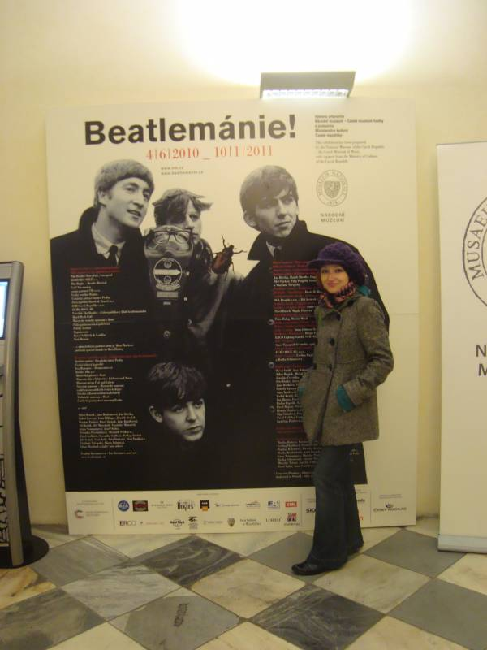
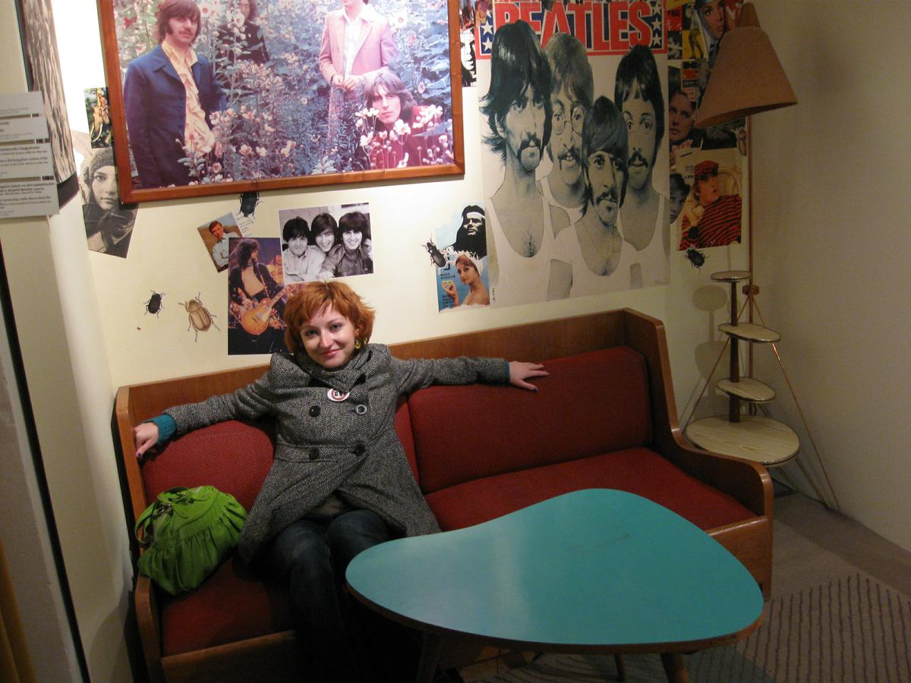
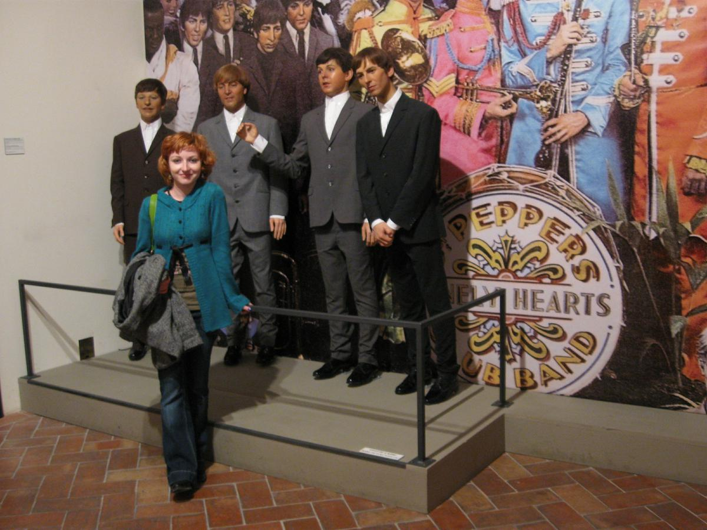
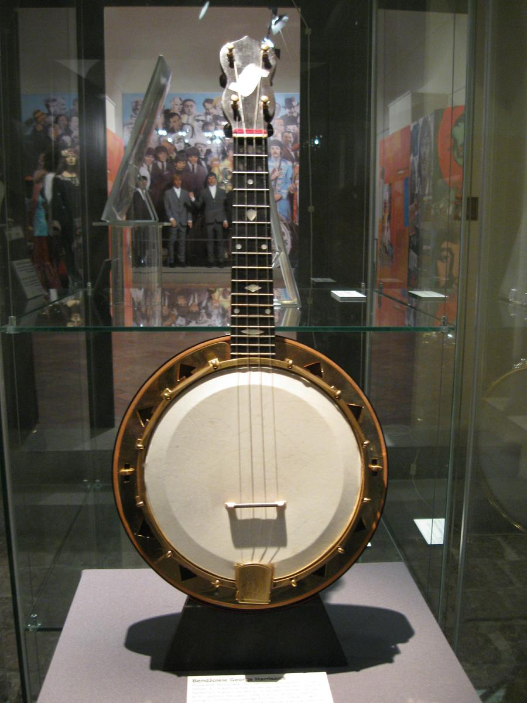
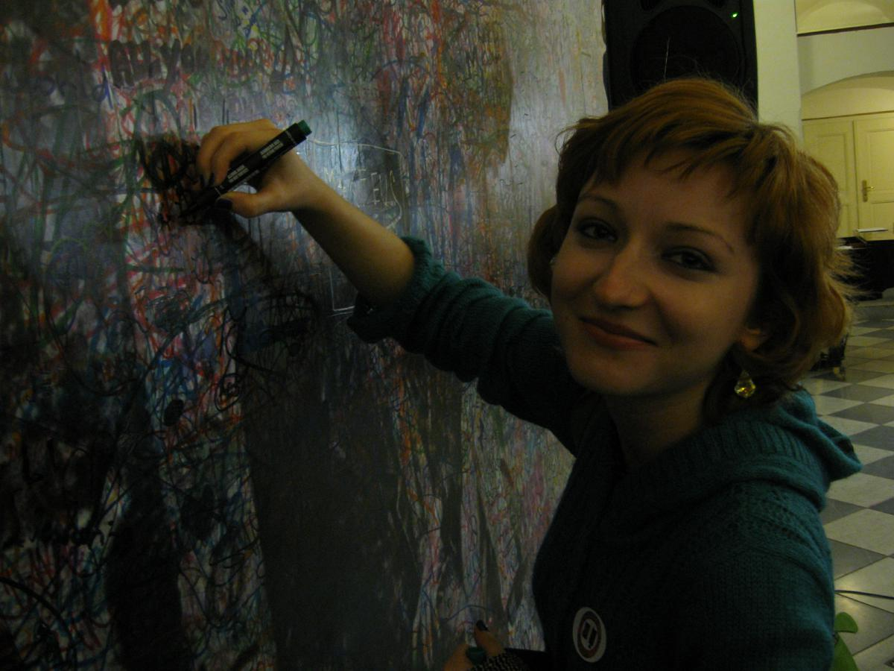

Prožila jsem báječný víkend v Praze!!! Jeho událostmi vás zde na blogu budu pravděpodobně ještě nějaký čas krmit :-), nicméně jeden zážitek všechny ostatní suverénně zastiňuje a o něm bych vám chtěla povědět už dnes. V pátek jsme se s Terkou rozhodly navštívit již dlouho plánovanou velkolepou výstavu v Českém muzeu hudby, která vypráví příběh nejslavnější kapely všech dob a jejího vlivu na československou společnost 60. let. Ačkoliv naše znalosti o Beatles jsou za ty roky naší společné beatlemánie více než hluboké, tuhletu událost jsme si zkrátka nemohly nechat ujít…

Brouci a já
Že jsme na správném místě nás ubezpečila hned na úvod cedule o tom, kterak Beatles měnili svět. Vždyť MY jsme mládež roku 2000, generace, která se do této čtyřčlenné kapely z Liverpoolu zbláznila téměř čtyřicet let poté, co propuklo okolo ní celosvětové šílenství, které předtím na poli hudebním nemělo obdoby. Derek Taylor se ve svém výroku rozhodně nespletl…

I přes naše rozsáhlé hudební poznatky jsme se na výstavě přecejen dočetly několik perliček. Kupříkladu to, že první elektrická kytara George Harrisona byla československé výroby :O (Věděli jste, že vůbec československo v té době vyrábělo elektrické kytary :D ???). Dalším vtipným exponátem bylo několik kýčovitých zahradních trpaslíků, o kterých jsem si zprvu pomyslela, že je tu asi pozapomněli od nějaké minulé výstavy. Na informační ceduli jsme se ale mohly dočíst, že se jedná o porcelánové výrobky ústecké továrny Ferdinanda Maresche a objevily se krom Georgova známého sólového trojalba All Things Must Pass také na obalu desky ze všech nejslavnější - Sgt. Pepper’s Lonely Hearts Club Band :-). To jsme ale světoví, co :D!

Můj nový pokojíček :)
Výstava byla plná skutečných sběratelských skvostů - plakátů, časopisů (Bravíčko s Paulem McCartneym na titulce :D), fotek, desek, novinových článků i “Beatles - deníčků”, které si zamlada psala generace našich rodičů :D. Mimo těchto pokladů zde ale bylo možné narazit také na dva opravdu speciální exponáty - originální voskové figuríny z Musea Madame Tussaud z roku 1964 nebo banjolele, které vlastnil (a držel v rukou) sám George Harrison :-)!!! To už je opravdu něco, co stojí za vidění ;)…A vlastnoruční podpis Paula McCartneyho - no neměli byste na mém místě taky druhé Vánoce :D ??

Brouci z vosku

Georgovo banjolele
Krom strhujícího příběhu nejslavnější skupiny všech dob výstava nabízí také seznámení s životem mládeže v tehdejším Československu, kulturními fenomény 60. let nebo s počátky českého bigbítu. Poslední část výstavy se věnovala především sólové tvorbě jednotlivých členů kapely a vyústila u veliké atrapy Lennonovy zdi z pražské Kampy. Poté, co jsme na zdi zanechaly své stopy :-), ještě jsme se honem běžely vyfotit se Žlutou ponorkou, a to už jsme stály na samém konci Beatlemánie…
Můžu vám říct, že “tolik Beatles” jsem pohromadě snad ještě nikdy neviděla…a že to byl skutečně ráj na zemi o:-)…Jeden panel na výstavě celkem trefně prohlašoval, že Beatles jsou jako nevyléčitelný virus. A asi to tak vážně bude. Po téměř deseti letech docházím k závěru, že Beatles jsou láska a vášeň, která člověka nikdy neopustí…A pravděpodobně ani nikdy neopustí tento svět :-)…

Tak co tam napíšeme :)?
Komentáře (4)
Komentáře jsou uzavřené.